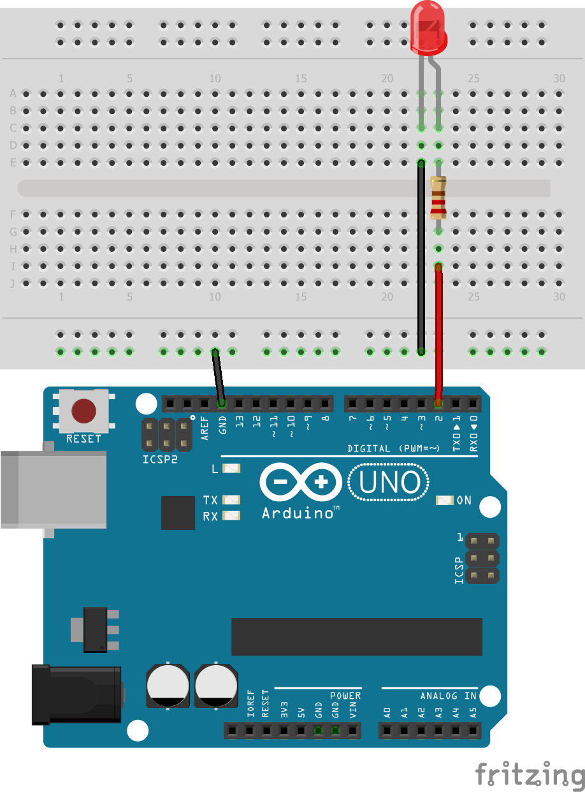
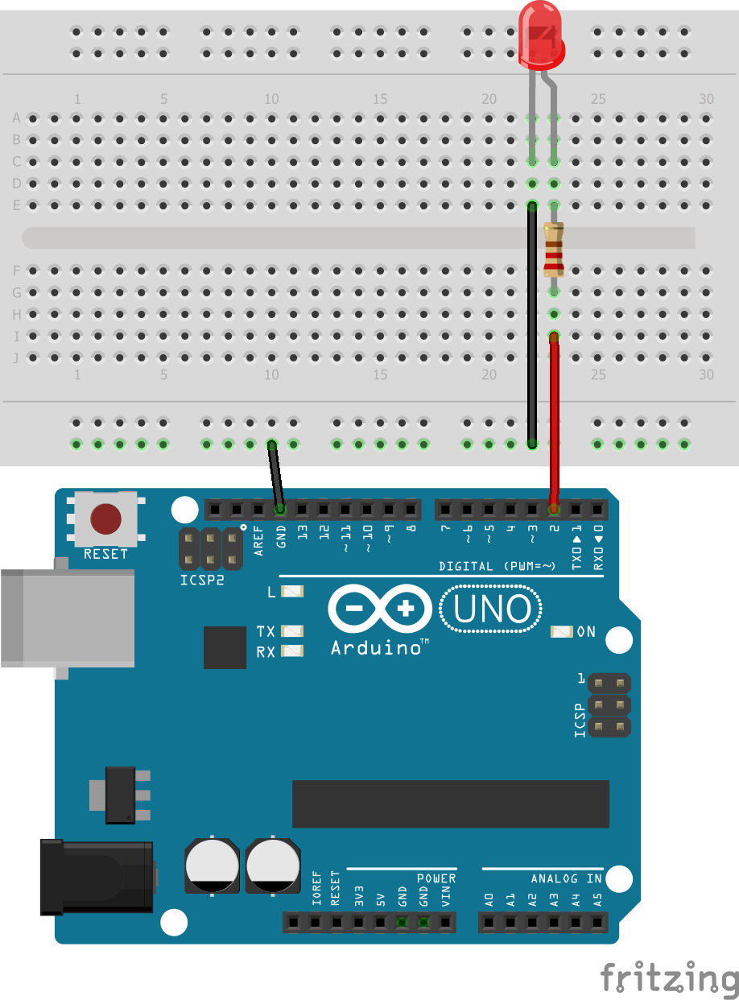

2. Led controlled by the Arduino board¶
Mount the following electrical schematic on a breadboard.
 

{kind=link}
Now it is necessary to program the Arduino UNO board so that the red led lights up.
Electrical circuit in Fritzing format
Exercises¶
Upload the following program to the Arduino UNO board. The red led should flash, on for one second and off for another second.
1 2 3 4 5 6 7 8 9 10 11 12 13 14 15 16 17 18 19 20 21 22
int LED_PIN = 2; // Ejecuta una sola vez las siguientes instrucciones void setup() { // El led se conecta a un pin de salida pinMode(LED_PIN, OUTPUT); } // Repite para siempre las siguientes instrucciones void loop() { // Enciende el LED (a nivel alto) digitalWrite(LED_PIN, HIGH); // Espera 1000 milisegundos (1 segundo) delay(1000); // Apaga el pin 2 (a nivel bajo) digitalWrite(LED_PIN, LOW); // Espera 1000 milisegundos (1 segundo) delay(1000); }
Modify the previous program so that the led looks like an alarm. It should come on for a tenth of a second and go off for ten seconds.
Modify the program so that the led looks like an artificial candle. The turn on time should be random between 100 and 300 milliseconds. The shutdown time should be random between 50 and 150 milliseconds.
The instruction to be used is:
1
delay( random(mínimo, máximo) );
Modify the program so that the LED flashes quickly (for 100 milliseconds) and then flashes slowly (for 1 second).
Modify the program so that the led blinks twice fast (every 100 milliseconds) and then stays off for 2 seconds.
Modify the program so that the led performs the opposite of the previous exercise. It should turn off fast twice (every 100 milliseconds) and then stay on for 2 seconds.
Modify the first program so that it turns the led on and off every few milliseconds (from 1 to 100 milliseconds). Experiment with various times to see what happens.
The human eye cannot see too fast flashes of light. After how many milliseconds can the flicker be observed?